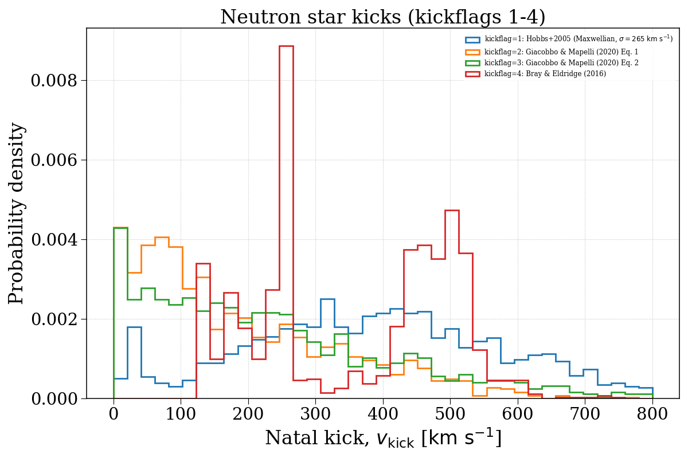
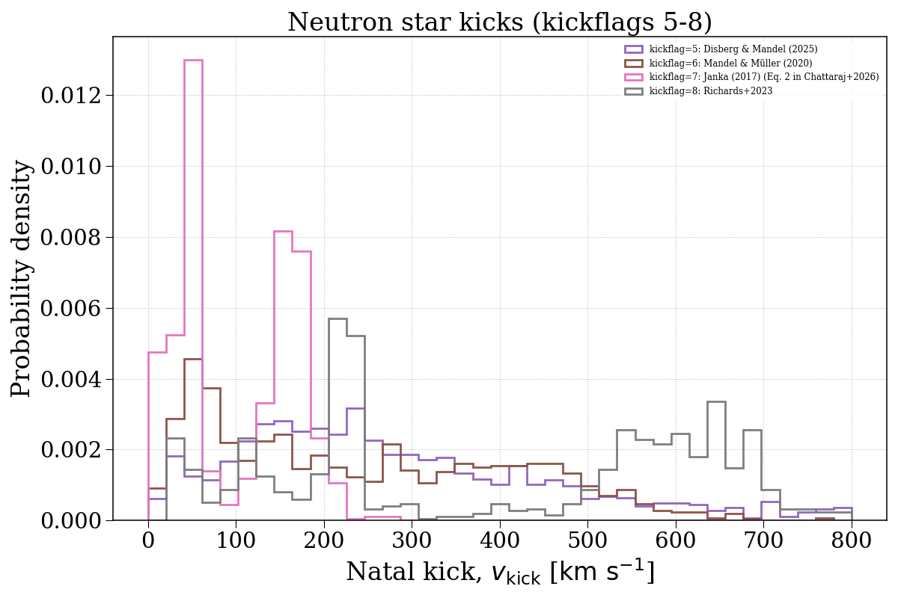
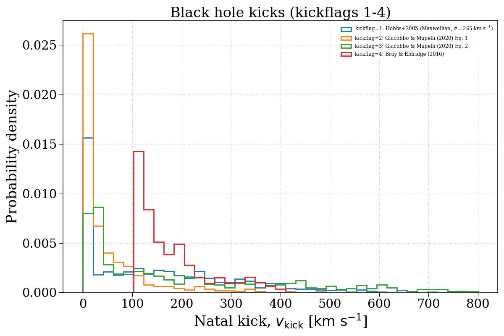
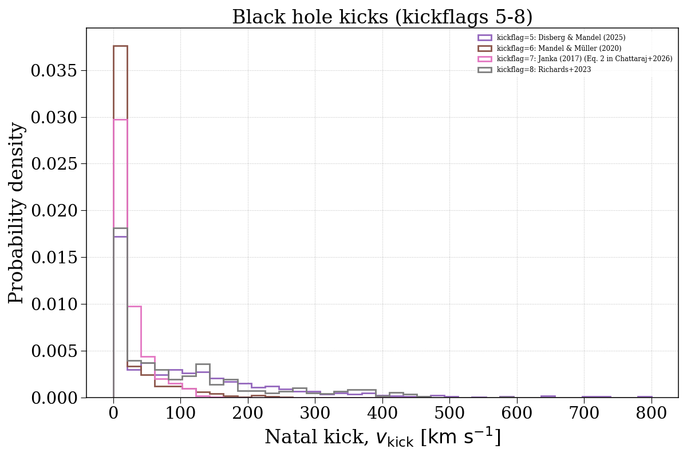

Note
Go to the end to download the full example code.
kickflag¶
This example demonstrates how changing the kickflag parameter can affect the natal kick velocity distributions of compact objects. We separate this into neutron stars and black holes.




Evolving population with kickflag = 1...
Evolving: 0%| | 0/2007 [00:00<?, ?sys/s]
Evolving: 1%| | 15/2007 [00:00<00:13, 146.67sys/s]
Evolving: 1%|▏ | 30/2007 [00:00<00:14, 133.68sys/s]
Evolving: 2%|▏ | 47/2007 [00:00<00:13, 148.70sys/s]
Evolving: 3%|▎ | 63/2007 [00:00<00:13, 149.03sys/s]
Evolving: 4%|▍ | 78/2007 [00:00<00:15, 121.91sys/s]
Evolving: 5%|▍ | 95/2007 [00:00<00:15, 124.49sys/s]
Evolving: 5%|▌ | 108/2007 [00:00<00:20, 94.46sys/s]
Evolving: 7%|▋ | 136/2007 [00:01<00:15, 124.06sys/s]
Evolving: 7%|▋ | 150/2007 [00:01<00:14, 124.85sys/s]
Evolving: 8%|▊ | 170/2007 [00:01<00:16, 110.05sys/s]
Evolving: 10%|▉ | 192/2007 [00:01<00:16, 107.99sys/s]
Evolving: 11%|█▏ | 226/2007 [00:01<00:15, 113.43sys/s]
Evolving: 12%|█▏ | 241/2007 [00:02<00:16, 108.88sys/s]
Evolving: 14%|█▍ | 276/2007 [00:02<00:11, 148.64sys/s]
Evolving: 15%|█▍ | 293/2007 [00:02<00:11, 147.37sys/s]
Evolving: 15%|█▌ | 310/2007 [00:02<00:12, 131.92sys/s]
Evolving: 16%|█▋ | 330/2007 [00:02<00:11, 143.32sys/s]
Evolving: 17%|█▋ | 346/2007 [00:02<00:12, 131.22sys/s]
Evolving: 18%|█▊ | 360/2007 [00:02<00:12, 132.31sys/s]
Evolving: 19%|█▉ | 377/2007 [00:02<00:11, 136.48sys/s]
Evolving: 20%|█▉ | 393/2007 [00:03<00:12, 133.99sys/s]
Evolving: 21%|██ | 413/2007 [00:03<00:10, 149.12sys/s]
Evolving: 21%|██▏ | 429/2007 [00:03<00:10, 151.58sys/s]
Evolving: 22%|██▏ | 445/2007 [00:03<00:14, 105.96sys/s]
Evolving: 23%|██▎ | 465/2007 [00:03<00:14, 107.06sys/s]
Evolving: 25%|██▍ | 495/2007 [00:03<00:10, 138.56sys/s]
Evolving: 25%|██▌ | 511/2007 [00:04<00:13, 113.48sys/s]
Evolving: 27%|██▋ | 538/2007 [00:04<00:10, 135.98sys/s]
Evolving: 28%|██▊ | 554/2007 [00:04<00:11, 129.37sys/s]
Evolving: 29%|██▊ | 572/2007 [00:04<00:10, 138.72sys/s]
Evolving: 29%|██▉ | 589/2007 [00:04<00:09, 143.98sys/s]
Evolving: 30%|███ | 605/2007 [00:04<00:13, 107.76sys/s]
Evolving: 31%|███ | 620/2007 [00:04<00:12, 114.08sys/s]
Evolving: 32%|███▏ | 647/2007 [00:05<00:09, 146.85sys/s]
Evolving: 33%|███▎ | 664/2007 [00:05<00:09, 142.19sys/s]
Evolving: 34%|███▍ | 680/2007 [00:05<00:09, 140.71sys/s]
Evolving: 35%|███▍ | 698/2007 [00:05<00:08, 150.12sys/s]
Evolving: 36%|███▌ | 714/2007 [00:05<00:11, 116.19sys/s]
Evolving: 37%|███▋ | 739/2007 [00:05<00:08, 145.33sys/s]
Evolving: 38%|███▊ | 757/2007 [00:05<00:08, 152.40sys/s]
Evolving: 39%|███▊ | 774/2007 [00:06<00:09, 128.50sys/s]
Evolving: 39%|███▉ | 791/2007 [00:06<00:09, 134.02sys/s]
Evolving: 40%|████ | 806/2007 [00:06<00:08, 135.91sys/s]
Evolving: 41%|████ | 821/2007 [00:06<00:09, 123.78sys/s]
Evolving: 42%|████▏ | 838/2007 [00:06<00:10, 106.54sys/s]
Evolving: 43%|████▎ | 866/2007 [00:06<00:08, 135.68sys/s]
Evolving: 44%|████▍ | 881/2007 [00:06<00:08, 137.31sys/s]
Evolving: 45%|████▍ | 900/2007 [00:07<00:09, 114.47sys/s]
Evolving: 46%|████▌ | 925/2007 [00:07<00:07, 141.78sys/s]
Evolving: 47%|████▋ | 942/2007 [00:07<00:07, 146.54sys/s]
Evolving: 48%|████▊ | 959/2007 [00:07<00:07, 147.58sys/s]
Evolving: 49%|████▊ | 975/2007 [00:07<00:07, 143.13sys/s]
Evolving: 49%|████▉ | 991/2007 [00:07<00:07, 144.85sys/s]
Evolving: 50%|█████ | 1009/2007 [00:07<00:08, 121.72sys/s]
Evolving: 51%|█████▏ | 1033/2007 [00:07<00:06, 147.48sys/s]
Evolving: 52%|█████▏ | 1050/2007 [00:08<00:08, 117.76sys/s]
Evolving: 53%|█████▎ | 1065/2007 [00:08<00:09, 102.82sys/s]
Evolving: 55%|█████▍ | 1097/2007 [00:08<00:06, 132.25sys/s]
Evolving: 55%|█████▌ | 1112/2007 [00:08<00:08, 108.49sys/s]
Evolving: 56%|█████▋ | 1133/2007 [00:08<00:07, 114.30sys/s]
Evolving: 57%|█████▋ | 1154/2007 [00:09<00:07, 118.63sys/s]
Evolving: 58%|█████▊ | 1174/2007 [00:09<00:08, 102.30sys/s]
Evolving: 59%|█████▉ | 1188/2007 [00:09<00:07, 107.03sys/s]
Evolving: 61%|██████ | 1215/2007 [00:09<00:06, 119.72sys/s]
Evolving: 61%|██████ | 1228/2007 [00:09<00:06, 118.89sys/s]
Evolving: 62%|██████▏ | 1247/2007 [00:09<00:07, 107.06sys/s]
Evolving: 64%|██████▎ | 1276/2007 [00:10<00:05, 142.24sys/s]
Evolving: 64%|██████▍ | 1293/2007 [00:10<00:04, 147.66sys/s]
Evolving: 65%|██████▌ | 1310/2007 [00:10<00:06, 107.38sys/s]
Evolving: 66%|██████▌ | 1324/2007 [00:10<00:07, 95.18sys/s]
Evolving: 67%|██████▋ | 1342/2007 [00:10<00:06, 102.83sys/s]
Evolving: 68%|██████▊ | 1369/2007 [00:10<00:05, 126.37sys/s]
Evolving: 69%|██████▉ | 1391/2007 [00:10<00:04, 144.68sys/s]
Evolving: 70%|███████ | 1408/2007 [00:11<00:04, 126.02sys/s]
Evolving: 71%|███████ | 1423/2007 [00:11<00:04, 124.00sys/s]
Evolving: 72%|███████▏ | 1442/2007 [00:11<00:05, 95.65sys/s]
Evolving: 74%|███████▎ | 1480/2007 [00:11<00:03, 146.32sys/s]
Evolving: 75%|███████▍ | 1499/2007 [00:11<00:03, 140.07sys/s]
Evolving: 76%|███████▌ | 1517/2007 [00:11<00:03, 147.12sys/s]
Evolving: 76%|███████▋ | 1535/2007 [00:12<00:03, 146.33sys/s]
Evolving: 77%|███████▋ | 1552/2007 [00:12<00:03, 149.79sys/s]
Evolving: 78%|███████▊ | 1569/2007 [00:12<00:03, 144.73sys/s]
Evolving: 79%|███████▉ | 1585/2007 [00:12<00:03, 121.19sys/s]
Evolving: 80%|████████ | 1608/2007 [00:12<00:02, 142.32sys/s]
Evolving: 81%|████████ | 1624/2007 [00:12<00:02, 135.82sys/s]
Evolving: 82%|████████▏ | 1639/2007 [00:12<00:02, 135.50sys/s]
Evolving: 82%|████████▏ | 1654/2007 [00:12<00:02, 129.54sys/s]
Evolving: 83%|████████▎ | 1669/2007 [00:13<00:02, 132.34sys/s]
Evolving: 84%|████████▍ | 1687/2007 [00:13<00:02, 141.72sys/s]
Evolving: 85%|████████▍ | 1704/2007 [00:13<00:02, 146.97sys/s]
Evolving: 86%|████████▌ | 1719/2007 [00:13<00:02, 106.12sys/s]
Evolving: 87%|████████▋ | 1742/2007 [00:13<00:02, 130.35sys/s]
Evolving: 88%|████████▊ | 1757/2007 [00:13<00:02, 111.25sys/s]
Evolving: 88%|████████▊ | 1772/2007 [00:13<00:01, 117.92sys/s]
Evolving: 89%|████████▉ | 1790/2007 [00:14<00:01, 129.01sys/s]
Evolving: 90%|████████▉ | 1805/2007 [00:14<00:01, 122.17sys/s]
Evolving: 91%|█████████ | 1823/2007 [00:14<00:01, 133.26sys/s]
Evolving: 92%|█████████▏| 1839/2007 [00:14<00:01, 130.40sys/s]
Evolving: 92%|█████████▏| 1853/2007 [00:14<00:01, 115.87sys/s]
Evolving: 94%|█████████▎| 1878/2007 [00:14<00:00, 146.06sys/s]
Evolving: 94%|█████████▍| 1894/2007 [00:14<00:00, 129.23sys/s]
Evolving: 95%|█████████▌| 1913/2007 [00:14<00:00, 134.11sys/s]
Evolving: 96%|█████████▌| 1931/2007 [00:15<00:00, 138.17sys/s]
Evolving: 97%|█████████▋| 1946/2007 [00:15<00:00, 117.61sys/s]
Evolving: 98%|█████████▊| 1959/2007 [00:15<00:00, 109.46sys/s]
Evolving: 99%|█████████▉| 1983/2007 [00:15<00:00, 137.34sys/s]
Evolving: 100%|█████████▉| 2000/2007 [00:15<00:00, 143.88sys/s]
Evolving: 100%|██████████| 2007/2007 [00:15<00:00, 127.90sys/s]
[Time taken: 15.9248 seconds]
Evolving population with kickflag = 2...
Evolving: 0%| | 0/2007 [00:00<?, ?sys/s]
Evolving: 0%| | 10/2007 [00:00<00:23, 85.51sys/s]
Evolving: 1%|▏ | 26/2007 [00:00<00:15, 124.28sys/s]
Evolving: 2%|▏ | 39/2007 [00:00<00:15, 124.40sys/s]
Evolving: 3%|▎ | 57/2007 [00:00<00:13, 143.09sys/s]
Evolving: 4%|▎ | 72/2007 [00:00<00:14, 136.03sys/s]
Evolving: 4%|▍ | 86/2007 [00:00<00:14, 129.10sys/s]
Evolving: 5%|▍ | 100/2007 [00:00<00:15, 126.91sys/s]
Evolving: 6%|▌ | 113/2007 [00:00<00:18, 101.18sys/s]
Evolving: 7%|▋ | 134/2007 [00:01<00:14, 127.45sys/s]
Evolving: 7%|▋ | 148/2007 [00:01<00:14, 130.68sys/s]
Evolving: 8%|▊ | 165/2007 [00:01<00:13, 136.86sys/s]
Evolving: 9%|▉ | 180/2007 [00:01<00:15, 114.28sys/s]
Evolving: 10%|▉ | 193/2007 [00:01<00:18, 97.11sys/s]
Evolving: 11%|█▏ | 226/2007 [00:01<00:16, 106.97sys/s]
Evolving: 12%|█▏ | 241/2007 [00:02<00:17, 103.06sys/s]
Evolving: 13%|█▎ | 267/2007 [00:02<00:13, 132.53sys/s]
Evolving: 14%|█▍ | 284/2007 [00:02<00:12, 132.84sys/s]
Evolving: 15%|█▍ | 299/2007 [00:02<00:14, 119.40sys/s]
Evolving: 16%|█▌ | 319/2007 [00:02<00:12, 134.64sys/s]
Evolving: 17%|█▋ | 341/2007 [00:02<00:10, 153.28sys/s]
Evolving: 18%|█▊ | 358/2007 [00:02<00:11, 148.56sys/s]
Evolving: 19%|█▊ | 374/2007 [00:02<00:11, 147.72sys/s]
Evolving: 20%|█▉ | 392/2007 [00:03<00:10, 155.22sys/s]
Evolving: 20%|██ | 409/2007 [00:03<00:11, 144.88sys/s]
Evolving: 21%|██ | 425/2007 [00:03<00:10, 146.04sys/s]
Evolving: 22%|██▏ | 440/2007 [00:03<00:12, 124.84sys/s]
Evolving: 23%|██▎ | 454/2007 [00:03<00:12, 122.84sys/s]
Evolving: 23%|██▎ | 467/2007 [00:03<00:15, 99.70sys/s]
Evolving: 25%|██▍ | 492/2007 [00:03<00:11, 132.60sys/s]
Evolving: 25%|██▌ | 507/2007 [00:04<00:14, 101.10sys/s]
Evolving: 27%|██▋ | 542/2007 [00:04<00:09, 146.60sys/s]
Evolving: 28%|██▊ | 560/2007 [00:04<00:10, 132.42sys/s]
Evolving: 29%|██▊ | 576/2007 [00:04<00:11, 129.29sys/s]
Evolving: 30%|██▉ | 594/2007 [00:04<00:13, 107.33sys/s]
Evolving: 31%|███ | 620/2007 [00:04<00:11, 121.20sys/s]
Evolving: 32%|███▏ | 644/2007 [00:05<00:09, 142.91sys/s]
Evolving: 33%|███▎ | 661/2007 [00:05<00:09, 135.35sys/s]
Evolving: 34%|███▍ | 679/2007 [00:05<00:09, 138.93sys/s]
Evolving: 35%|███▍ | 694/2007 [00:05<00:09, 139.35sys/s]
Evolving: 35%|███▌ | 709/2007 [00:05<00:12, 101.33sys/s]
Evolving: 37%|███▋ | 744/2007 [00:05<00:08, 149.65sys/s]
Evolving: 38%|███▊ | 763/2007 [00:06<00:10, 119.70sys/s]
Evolving: 39%|███▉ | 786/2007 [00:06<00:08, 140.38sys/s]
Evolving: 40%|████ | 804/2007 [00:06<00:08, 136.11sys/s]
Evolving: 41%|████ | 820/2007 [00:06<00:09, 123.65sys/s]
Evolving: 42%|████▏ | 838/2007 [00:06<00:10, 106.65sys/s]
Evolving: 43%|████▎ | 867/2007 [00:06<00:08, 138.52sys/s]
Evolving: 44%|████▍ | 887/2007 [00:06<00:07, 146.91sys/s]
Evolving: 45%|████▌ | 904/2007 [00:07<00:10, 109.39sys/s]
Evolving: 47%|████▋ | 935/2007 [00:07<00:07, 146.79sys/s]
Evolving: 48%|████▊ | 954/2007 [00:07<00:07, 138.61sys/s]
Evolving: 48%|████▊ | 971/2007 [00:07<00:07, 143.33sys/s]
Evolving: 49%|████▉ | 988/2007 [00:07<00:06, 146.57sys/s]
Evolving: 50%|█████ | 1005/2007 [00:07<00:06, 146.22sys/s]
Evolving: 51%|█████ | 1021/2007 [00:07<00:07, 135.72sys/s]
Evolving: 52%|█████▏ | 1036/2007 [00:08<00:07, 138.21sys/s]
Evolving: 52%|█████▏ | 1051/2007 [00:08<00:08, 111.59sys/s]
Evolving: 53%|█████▎ | 1065/2007 [00:08<00:09, 103.73sys/s]
Evolving: 54%|█████▍ | 1088/2007 [00:08<00:07, 127.60sys/s]
Evolving: 55%|█████▌ | 1106/2007 [00:08<00:09, 91.87sys/s]
Evolving: 56%|█████▋ | 1133/2007 [00:08<00:07, 122.71sys/s]
Evolving: 57%|█████▋ | 1149/2007 [00:09<00:06, 127.94sys/s]
Evolving: 58%|█████▊ | 1165/2007 [00:09<00:06, 132.41sys/s]
Evolving: 59%|█████▉ | 1181/2007 [00:09<00:07, 106.03sys/s]
Evolving: 60%|██████ | 1207/2007 [00:09<00:05, 134.80sys/s]
Evolving: 61%|██████ | 1223/2007 [00:09<00:06, 112.59sys/s]
Evolving: 62%|██████▏ | 1238/2007 [00:09<00:06, 117.57sys/s]
Evolving: 62%|██████▏ | 1252/2007 [00:10<00:07, 96.95sys/s]
Evolving: 64%|██████▎ | 1278/2007 [00:10<00:05, 129.14sys/s]
Evolving: 65%|██████▍ | 1295/2007 [00:10<00:05, 136.09sys/s]
Evolving: 65%|██████▌ | 1311/2007 [00:10<00:06, 103.41sys/s]
Evolving: 66%|██████▌ | 1324/2007 [00:10<00:07, 94.60sys/s]
Evolving: 67%|██████▋ | 1342/2007 [00:10<00:06, 96.71sys/s]
Evolving: 68%|██████▊ | 1369/2007 [00:10<00:05, 123.62sys/s]
Evolving: 69%|██████▉ | 1389/2007 [00:11<00:04, 138.69sys/s]
Evolving: 70%|███████ | 1405/2007 [00:11<00:04, 120.91sys/s]
Evolving: 71%|███████ | 1421/2007 [00:11<00:04, 121.03sys/s]
Evolving: 72%|███████▏ | 1442/2007 [00:11<00:05, 97.57sys/s]
Evolving: 74%|███████▍ | 1481/2007 [00:11<00:03, 147.24sys/s]
Evolving: 75%|███████▍ | 1500/2007 [00:11<00:03, 147.82sys/s]
Evolving: 76%|███████▌ | 1518/2007 [00:12<00:03, 143.90sys/s]
Evolving: 76%|███████▋ | 1535/2007 [00:12<00:03, 147.74sys/s]
Evolving: 77%|███████▋ | 1552/2007 [00:12<00:03, 150.89sys/s]
Evolving: 78%|███████▊ | 1569/2007 [00:12<00:03, 140.93sys/s]
Evolving: 79%|███████▉ | 1584/2007 [00:12<00:03, 117.65sys/s]
Evolving: 80%|████████ | 1610/2007 [00:12<00:02, 147.86sys/s]
Evolving: 81%|████████ | 1627/2007 [00:12<00:02, 133.22sys/s]
Evolving: 82%|████████▏ | 1647/2007 [00:12<00:02, 142.14sys/s]
Evolving: 83%|████████▎ | 1663/2007 [00:13<00:02, 133.34sys/s]
Evolving: 84%|████████▎ | 1679/2007 [00:13<00:02, 139.01sys/s]
Evolving: 84%|████████▍ | 1694/2007 [00:13<00:02, 138.91sys/s]
Evolving: 85%|████████▌ | 1709/2007 [00:13<00:02, 103.51sys/s]
Evolving: 86%|████████▌ | 1721/2007 [00:13<00:02, 106.95sys/s]
Evolving: 87%|████████▋ | 1746/2007 [00:13<00:02, 103.29sys/s]
Evolving: 88%|████████▊ | 1772/2007 [00:14<00:01, 132.86sys/s]
Evolving: 89%|████████▉ | 1788/2007 [00:14<00:01, 131.92sys/s]
Evolving: 90%|████████▉ | 1803/2007 [00:14<00:01, 131.83sys/s]
Evolving: 91%|█████████ | 1818/2007 [00:14<00:01, 130.86sys/s]
Evolving: 91%|█████████▏| 1835/2007 [00:14<00:01, 135.72sys/s]
Evolving: 92%|█████████▏| 1850/2007 [00:14<00:01, 104.15sys/s]
Evolving: 94%|█████████▍| 1882/2007 [00:14<00:00, 148.02sys/s]
Evolving: 95%|█████████▍| 1900/2007 [00:15<00:00, 123.95sys/s]
Evolving: 95%|█████████▌| 1915/2007 [00:15<00:00, 125.47sys/s]
Evolving: 96%|█████████▌| 1930/2007 [00:15<00:00, 118.44sys/s]
Evolving: 97%|█████████▋| 1943/2007 [00:15<00:00, 108.56sys/s]
Evolving: 97%|█████████▋| 1956/2007 [00:15<00:00, 87.51sys/s]
Evolving: 98%|█████████▊| 1974/2007 [00:15<00:00, 101.68sys/s]
Evolving: 99%|█████████▉| 1988/2007 [00:15<00:00, 100.53sys/s]
Evolving: 100%|██████████| 2007/2007 [00:16<00:00, 125.08sys/s]
[Time taken: 16.2539 seconds]
Evolving population with kickflag = 3...
Evolving: 0%| | 0/2007 [00:00<?, ?sys/s]
Evolving: 0%| | 8/2007 [00:00<00:33, 60.18sys/s]
Evolving: 1%| | 24/2007 [00:00<00:17, 111.22sys/s]
Evolving: 2%|▏ | 36/2007 [00:00<00:20, 95.24sys/s]
Evolving: 3%|▎ | 55/2007 [00:00<00:15, 122.05sys/s]
Evolving: 3%|▎ | 68/2007 [00:00<00:17, 112.80sys/s]
Evolving: 4%|▍ | 81/2007 [00:00<00:17, 111.54sys/s]
Evolving: 5%|▍ | 95/2007 [00:00<00:16, 113.90sys/s]
Evolving: 5%|▌ | 107/2007 [00:01<00:21, 90.46sys/s]
Evolving: 7%|▋ | 136/2007 [00:01<00:14, 129.75sys/s]
Evolving: 7%|▋ | 150/2007 [00:01<00:14, 129.65sys/s]
Evolving: 8%|▊ | 170/2007 [00:01<00:16, 108.83sys/s]
Evolving: 10%|▉ | 192/2007 [00:01<00:16, 110.88sys/s]
Evolving: 11%|█▏ | 226/2007 [00:02<00:15, 112.42sys/s]
Evolving: 12%|█▏ | 241/2007 [00:02<00:16, 107.63sys/s]
Evolving: 14%|█▎ | 275/2007 [00:02<00:12, 143.45sys/s]
Evolving: 15%|█▍ | 293/2007 [00:02<00:11, 146.35sys/s]
Evolving: 15%|█▌ | 309/2007 [00:02<00:12, 135.27sys/s]
Evolving: 16%|█▌ | 325/2007 [00:02<00:12, 136.79sys/s]
Evolving: 17%|█▋ | 341/2007 [00:02<00:11, 139.60sys/s]
Evolving: 18%|█▊ | 357/2007 [00:02<00:11, 141.14sys/s]
Evolving: 19%|█▊ | 374/2007 [00:03<00:11, 147.02sys/s]
Evolving: 19%|█▉ | 391/2007 [00:03<00:10, 150.17sys/s]
Evolving: 20%|██ | 407/2007 [00:03<00:10, 147.01sys/s]
Evolving: 21%|██ | 422/2007 [00:03<00:10, 146.94sys/s]
Evolving: 22%|██▏ | 437/2007 [00:03<00:13, 117.99sys/s]
Evolving: 22%|██▏ | 450/2007 [00:03<00:13, 113.20sys/s]
Evolving: 23%|██▎ | 465/2007 [00:03<00:14, 103.25sys/s]
Evolving: 25%|██▍ | 492/2007 [00:03<00:10, 138.14sys/s]
Evolving: 25%|██▌ | 508/2007 [00:04<00:13, 109.58sys/s]
Evolving: 27%|██▋ | 539/2007 [00:04<00:09, 147.96sys/s]
Evolving: 28%|██▊ | 557/2007 [00:04<00:10, 132.95sys/s]
Evolving: 29%|██▊ | 573/2007 [00:04<00:10, 138.74sys/s]
Evolving: 29%|██▉ | 589/2007 [00:04<00:09, 142.75sys/s]
Evolving: 30%|███ | 605/2007 [00:04<00:12, 113.97sys/s]
Evolving: 31%|███ | 620/2007 [00:04<00:11, 119.33sys/s]
Evolving: 32%|███▏ | 641/2007 [00:05<00:09, 138.28sys/s]
Evolving: 33%|███▎ | 657/2007 [00:05<00:10, 131.18sys/s]
Evolving: 33%|███▎ | 672/2007 [00:05<00:10, 132.54sys/s]
Evolving: 34%|███▍ | 691/2007 [00:05<00:09, 145.64sys/s]
Evolving: 35%|███▌ | 708/2007 [00:05<00:11, 109.35sys/s]
Evolving: 37%|███▋ | 740/2007 [00:05<00:08, 149.50sys/s]
Evolving: 38%|███▊ | 760/2007 [00:05<00:08, 151.03sys/s]
Evolving: 39%|███▊ | 777/2007 [00:06<00:09, 136.61sys/s]
Evolving: 40%|███▉ | 795/2007 [00:06<00:08, 144.17sys/s]
Evolving: 40%|████ | 811/2007 [00:06<00:10, 108.78sys/s]
Evolving: 42%|████▏ | 838/2007 [00:06<00:10, 114.03sys/s]
Evolving: 43%|████▎ | 862/2007 [00:06<00:08, 137.00sys/s]
Evolving: 44%|████▎ | 878/2007 [00:06<00:07, 141.75sys/s]
Evolving: 45%|████▍ | 898/2007 [00:06<00:07, 155.05sys/s]
Evolving: 46%|████▌ | 916/2007 [00:07<00:08, 133.60sys/s]
Evolving: 46%|████▋ | 932/2007 [00:07<00:08, 130.18sys/s]
Evolving: 47%|████▋ | 952/2007 [00:07<00:08, 130.37sys/s]
Evolving: 48%|████▊ | 971/2007 [00:07<00:07, 137.10sys/s]
Evolving: 49%|████▉ | 987/2007 [00:07<00:07, 137.85sys/s]
Evolving: 50%|████▉ | 1003/2007 [00:07<00:07, 142.72sys/s]
Evolving: 51%|█████ | 1018/2007 [00:07<00:07, 132.24sys/s]
Evolving: 52%|█████▏ | 1037/2007 [00:08<00:06, 143.25sys/s]
Evolving: 52%|█████▏ | 1052/2007 [00:08<00:08, 117.68sys/s]
Evolving: 53%|█████▎ | 1065/2007 [00:08<00:09, 99.71sys/s]
Evolving: 55%|█████▍ | 1095/2007 [00:08<00:06, 141.31sys/s]
Evolving: 55%|█████▌ | 1112/2007 [00:08<00:08, 102.21sys/s]
Evolving: 56%|█████▋ | 1133/2007 [00:08<00:07, 119.48sys/s]
Evolving: 57%|█████▋ | 1148/2007 [00:09<00:07, 117.07sys/s]
Evolving: 58%|█████▊ | 1166/2007 [00:09<00:06, 128.62sys/s]
Evolving: 59%|█████▉ | 1181/2007 [00:09<00:07, 103.41sys/s]
Evolving: 59%|█████▉ | 1194/2007 [00:09<00:07, 105.55sys/s]
Evolving: 61%|██████ | 1215/2007 [00:09<00:07, 102.03sys/s]
Evolving: 62%|██████▏ | 1236/2007 [00:09<00:06, 123.31sys/s]
Evolving: 62%|██████▏ | 1251/2007 [00:10<00:07, 104.69sys/s]
Evolving: 64%|██████▍ | 1281/2007 [00:10<00:05, 143.14sys/s]
Evolving: 65%|██████▍ | 1299/2007 [00:10<00:04, 145.30sys/s]
Evolving: 66%|██████▌ | 1316/2007 [00:10<00:06, 113.03sys/s]
Evolving: 66%|██████▋ | 1330/2007 [00:10<00:06, 103.93sys/s]
Evolving: 67%|██████▋ | 1343/2007 [00:10<00:06, 96.48sys/s]
Evolving: 67%|██████▋ | 1354/2007 [00:10<00:07, 89.60sys/s]
Evolving: 69%|██████▉ | 1391/2007 [00:11<00:04, 144.40sys/s]
Evolving: 70%|███████ | 1408/2007 [00:11<00:04, 128.50sys/s]
Evolving: 71%|███████ | 1423/2007 [00:11<00:04, 127.44sys/s]
Evolving: 72%|███████▏ | 1442/2007 [00:11<00:05, 99.20sys/s]
Evolving: 74%|███████▎ | 1479/2007 [00:11<00:03, 148.74sys/s]
Evolving: 75%|███████▍ | 1499/2007 [00:11<00:03, 146.94sys/s]
Evolving: 76%|███████▌ | 1517/2007 [00:12<00:03, 141.23sys/s]
Evolving: 76%|███████▋ | 1534/2007 [00:12<00:03, 145.00sys/s]
Evolving: 77%|███████▋ | 1551/2007 [00:12<00:03, 146.18sys/s]
Evolving: 78%|███████▊ | 1568/2007 [00:12<00:02, 149.47sys/s]
Evolving: 79%|███████▉ | 1584/2007 [00:12<00:03, 112.98sys/s]
Evolving: 80%|████████ | 1612/2007 [00:12<00:02, 147.81sys/s]
Evolving: 81%|████████ | 1630/2007 [00:12<00:02, 136.49sys/s]
Evolving: 82%|████████▏ | 1646/2007 [00:12<00:02, 141.46sys/s]
Evolving: 83%|████████▎ | 1662/2007 [00:13<00:02, 132.29sys/s]
Evolving: 84%|████████▎ | 1677/2007 [00:13<00:02, 135.14sys/s]
Evolving: 84%|████████▍ | 1692/2007 [00:13<00:02, 134.48sys/s]
Evolving: 85%|████████▌ | 1707/2007 [00:13<00:02, 101.55sys/s]
Evolving: 86%|████████▌ | 1729/2007 [00:13<00:02, 125.86sys/s]
Evolving: 87%|████████▋ | 1746/2007 [00:13<00:02, 98.88sys/s]
Evolving: 88%|████████▊ | 1773/2007 [00:14<00:01, 120.01sys/s]
Evolving: 89%|████████▉ | 1794/2007 [00:14<00:01, 137.58sys/s]
Evolving: 90%|█████████ | 1810/2007 [00:14<00:01, 130.90sys/s]
Evolving: 91%|█████████ | 1826/2007 [00:14<00:01, 136.26sys/s]
Evolving: 92%|█████████▏| 1841/2007 [00:14<00:01, 126.04sys/s]
Evolving: 92%|█████████▏| 1855/2007 [00:14<00:01, 105.98sys/s]
Evolving: 94%|█████████▍| 1884/2007 [00:14<00:01, 118.04sys/s]
Evolving: 95%|█████████▌| 1911/2007 [00:15<00:00, 145.67sys/s]
Evolving: 96%|█████████▌| 1927/2007 [00:15<00:00, 147.05sys/s]
Evolving: 97%|█████████▋| 1943/2007 [00:15<00:00, 123.54sys/s]
Evolving: 98%|█████████▊| 1957/2007 [00:15<00:00, 111.54sys/s]
Evolving: 99%|█████████▊| 1979/2007 [00:15<00:00, 126.16sys/s]
Evolving: 100%|█████████▉| 2000/2007 [00:15<00:00, 143.70sys/s]
Evolving: 100%|██████████| 2007/2007 [00:15<00:00, 126.82sys/s]
[Time taken: 16.0285 seconds]
Evolving population with kickflag = 4...
Evolving: 0%| | 0/2007 [00:00<?, ?sys/s]
Evolving: 0%| | 8/2007 [00:00<00:28, 70.61sys/s]
Evolving: 1%|▏ | 28/2007 [00:00<00:14, 137.16sys/s]
Evolving: 2%|▏ | 42/2007 [00:00<00:16, 120.90sys/s]
Evolving: 3%|▎ | 63/2007 [00:00<00:13, 147.78sys/s]
Evolving: 4%|▍ | 79/2007 [00:00<00:16, 117.31sys/s]
Evolving: 5%|▍ | 95/2007 [00:00<00:16, 118.55sys/s]
Evolving: 5%|▌ | 108/2007 [00:00<00:19, 98.95sys/s]
Evolving: 7%|▋ | 136/2007 [00:01<00:14, 125.59sys/s]
Evolving: 8%|▊ | 157/2007 [00:01<00:12, 144.68sys/s]
Evolving: 9%|▊ | 173/2007 [00:01<00:16, 108.90sys/s]
Evolving: 10%|▉ | 192/2007 [00:01<00:16, 109.39sys/s]
Evolving: 11%|█ | 223/2007 [00:01<00:12, 147.70sys/s]
Evolving: 12%|█▏ | 241/2007 [00:02<00:18, 97.24sys/s]
Evolving: 14%|█▍ | 276/2007 [00:02<00:12, 138.79sys/s]
Evolving: 15%|█▍ | 296/2007 [00:02<00:12, 139.51sys/s]
Evolving: 16%|█▌ | 315/2007 [00:02<00:12, 136.98sys/s]
Evolving: 17%|█▋ | 332/2007 [00:02<00:12, 136.47sys/s]
Evolving: 17%|█▋ | 348/2007 [00:02<00:13, 121.54sys/s]
Evolving: 18%|█▊ | 368/2007 [00:02<00:12, 131.26sys/s]
Evolving: 19%|█▉ | 389/2007 [00:03<00:11, 140.12sys/s]
Evolving: 20%|██ | 404/2007 [00:03<00:12, 130.88sys/s]
Evolving: 21%|██ | 426/2007 [00:03<00:10, 149.58sys/s]
Evolving: 22%|██▏ | 442/2007 [00:03<00:11, 132.73sys/s]
Evolving: 23%|██▎ | 457/2007 [00:03<00:11, 133.70sys/s]
Evolving: 23%|██▎ | 471/2007 [00:03<00:13, 110.34sys/s]
Evolving: 25%|██▍ | 493/2007 [00:03<00:11, 127.28sys/s]
Evolving: 25%|██▌ | 507/2007 [00:04<00:14, 103.58sys/s]
Evolving: 27%|██▋ | 537/2007 [00:04<00:10, 142.45sys/s]
Evolving: 28%|██▊ | 554/2007 [00:04<00:11, 124.82sys/s]
Evolving: 28%|██▊ | 571/2007 [00:04<00:10, 133.71sys/s]
Evolving: 29%|██▉ | 590/2007 [00:04<00:09, 145.81sys/s]
Evolving: 30%|███ | 607/2007 [00:04<00:11, 120.42sys/s]
Evolving: 31%|███ | 621/2007 [00:04<00:11, 122.29sys/s]
Evolving: 32%|███▏ | 640/2007 [00:05<00:10, 130.55sys/s]
Evolving: 33%|███▎ | 654/2007 [00:05<00:10, 125.14sys/s]
Evolving: 33%|███▎ | 671/2007 [00:05<00:10, 124.39sys/s]
Evolving: 35%|███▍ | 696/2007 [00:05<00:08, 153.71sys/s]
Evolving: 36%|███▌ | 713/2007 [00:05<00:10, 119.63sys/s]
Evolving: 37%|███▋ | 741/2007 [00:05<00:08, 150.49sys/s]
Evolving: 38%|███▊ | 759/2007 [00:05<00:08, 150.69sys/s]
Evolving: 39%|███▊ | 776/2007 [00:06<00:09, 130.25sys/s]
Evolving: 39%|███▉ | 791/2007 [00:06<00:09, 125.93sys/s]
Evolving: 40%|████ | 810/2007 [00:06<00:11, 107.72sys/s]
Evolving: 42%|████▏ | 835/2007 [00:06<00:08, 135.99sys/s]
Evolving: 42%|████▏ | 851/2007 [00:06<00:08, 129.55sys/s]
Evolving: 43%|████▎ | 868/2007 [00:06<00:08, 137.15sys/s]
Evolving: 44%|████▍ | 883/2007 [00:06<00:08, 139.08sys/s]
Evolving: 45%|████▍ | 900/2007 [00:07<00:09, 115.33sys/s]
Evolving: 45%|████▌ | 913/2007 [00:07<00:09, 116.21sys/s]
Evolving: 47%|████▋ | 937/2007 [00:07<00:07, 144.13sys/s]
Evolving: 47%|████▋ | 953/2007 [00:07<00:07, 134.44sys/s]
Evolving: 48%|████▊ | 972/2007 [00:07<00:07, 146.30sys/s]
Evolving: 49%|████▉ | 990/2007 [00:07<00:06, 151.49sys/s]
Evolving: 50%|█████ | 1006/2007 [00:07<00:06, 145.16sys/s]
Evolving: 51%|█████ | 1021/2007 [00:07<00:07, 134.19sys/s]
Evolving: 52%|█████▏ | 1035/2007 [00:07<00:07, 134.31sys/s]
Evolving: 52%|█████▏ | 1049/2007 [00:08<00:09, 104.87sys/s]
Evolving: 53%|█████▎ | 1065/2007 [00:08<00:08, 104.76sys/s]
Evolving: 54%|█████▍ | 1088/2007 [00:08<00:07, 124.24sys/s]
Evolving: 55%|█████▌ | 1106/2007 [00:08<00:09, 96.57sys/s]
Evolving: 56%|█████▋ | 1133/2007 [00:08<00:07, 121.89sys/s]
Evolving: 57%|█████▋ | 1147/2007 [00:09<00:07, 119.43sys/s]
Evolving: 58%|█████▊ | 1167/2007 [00:09<00:06, 129.37sys/s]
Evolving: 59%|█████▉ | 1181/2007 [00:09<00:07, 103.51sys/s]
Evolving: 60%|██████ | 1207/2007 [00:09<00:06, 132.19sys/s]
Evolving: 61%|██████ | 1223/2007 [00:09<00:06, 115.73sys/s]
Evolving: 62%|██████▏ | 1237/2007 [00:09<00:06, 114.50sys/s]
Evolving: 62%|██████▏ | 1250/2007 [00:10<00:07, 96.22sys/s]
Evolving: 64%|██████▎ | 1277/2007 [00:10<00:05, 130.48sys/s]
Evolving: 65%|██████▍ | 1296/2007 [00:10<00:04, 142.23sys/s]
Evolving: 65%|██████▌ | 1313/2007 [00:10<00:06, 108.09sys/s]
Evolving: 66%|██████▌ | 1327/2007 [00:10<00:06, 101.13sys/s]
Evolving: 67%|██████▋ | 1342/2007 [00:10<00:07, 91.92sys/s]
Evolving: 68%|██████▊ | 1369/2007 [00:10<00:05, 122.18sys/s]
Evolving: 69%|██████▉ | 1390/2007 [00:11<00:04, 139.46sys/s]
Evolving: 70%|███████ | 1407/2007 [00:11<00:04, 124.96sys/s]
Evolving: 71%|███████ | 1422/2007 [00:11<00:04, 120.44sys/s]
Evolving: 72%|███████▏ | 1442/2007 [00:11<00:05, 96.55sys/s]
Evolving: 74%|███████▎ | 1479/2007 [00:11<00:03, 145.63sys/s]
Evolving: 75%|███████▍ | 1498/2007 [00:11<00:03, 142.83sys/s]
Evolving: 76%|███████▌ | 1516/2007 [00:12<00:03, 142.46sys/s]
Evolving: 76%|███████▋ | 1533/2007 [00:12<00:03, 147.14sys/s]
Evolving: 77%|███████▋ | 1550/2007 [00:12<00:03, 144.14sys/s]
Evolving: 78%|███████▊ | 1567/2007 [00:12<00:03, 143.79sys/s]
Evolving: 79%|███████▉ | 1583/2007 [00:12<00:03, 121.89sys/s]
Evolving: 80%|████████ | 1608/2007 [00:12<00:02, 150.06sys/s]
Evolving: 81%|████████ | 1625/2007 [00:12<00:02, 144.60sys/s]
Evolving: 82%|████████▏ | 1641/2007 [00:12<00:02, 137.77sys/s]
Evolving: 83%|████████▎ | 1656/2007 [00:13<00:03, 115.18sys/s]
Evolving: 84%|████████▎ | 1680/2007 [00:13<00:02, 136.30sys/s]
Evolving: 85%|████████▍ | 1699/2007 [00:13<00:02, 145.87sys/s]
Evolving: 85%|████████▌ | 1715/2007 [00:13<00:02, 113.75sys/s]
Evolving: 86%|████████▋ | 1735/2007 [00:13<00:02, 128.08sys/s]
Evolving: 87%|████████▋ | 1750/2007 [00:13<00:02, 102.67sys/s]
Evolving: 88%|████████▊ | 1773/2007 [00:14<00:01, 119.07sys/s]
Evolving: 89%|████████▉ | 1791/2007 [00:14<00:01, 129.41sys/s]
Evolving: 90%|████████▉ | 1806/2007 [00:14<00:01, 132.28sys/s]
Evolving: 91%|█████████ | 1821/2007 [00:14<00:01, 135.27sys/s]
Evolving: 92%|█████████▏| 1839/2007 [00:14<00:01, 129.52sys/s]
Evolving: 92%|█████████▏| 1853/2007 [00:14<00:01, 112.10sys/s]
Evolving: 94%|█████████▎| 1880/2007 [00:14<00:00, 145.14sys/s]
Evolving: 94%|█████████▍| 1896/2007 [00:14<00:00, 135.01sys/s]
Evolving: 95%|█████████▌| 1914/2007 [00:15<00:00, 143.37sys/s]
Evolving: 96%|█████████▌| 1930/2007 [00:15<00:00, 138.83sys/s]
Evolving: 97%|█████████▋| 1945/2007 [00:15<00:00, 115.76sys/s]
Evolving: 98%|█████████▊| 1958/2007 [00:15<00:00, 107.40sys/s]
Evolving: 99%|█████████▉| 1982/2007 [00:15<00:00, 137.16sys/s]
Evolving: 100%|█████████▉| 1998/2007 [00:15<00:00, 141.73sys/s]
Evolving: 100%|██████████| 2007/2007 [00:15<00:00, 127.28sys/s]
[Time taken: 15.9592 seconds]
Evolving population with kickflag = 5...
Evolving: 0%| | 0/2007 [00:00<?, ?sys/s]
Evolving: 0%| | 8/2007 [00:00<00:26, 76.86sys/s]
Evolving: 1%|▏ | 27/2007 [00:00<00:14, 139.88sys/s]
Evolving: 2%|▏ | 42/2007 [00:00<00:14, 131.80sys/s]
Evolving: 3%|▎ | 58/2007 [00:00<00:13, 140.31sys/s]
Evolving: 4%|▎ | 73/2007 [00:00<00:13, 141.31sys/s]
Evolving: 4%|▍ | 88/2007 [00:00<00:15, 123.36sys/s]
Evolving: 5%|▌ | 103/2007 [00:00<00:14, 127.90sys/s]
Evolving: 6%|▌ | 117/2007 [00:00<00:17, 108.56sys/s]
Evolving: 7%|▋ | 136/2007 [00:01<00:16, 115.10sys/s]
Evolving: 8%|▊ | 157/2007 [00:01<00:14, 129.90sys/s]
Evolving: 9%|▊ | 171/2007 [00:01<00:18, 100.09sys/s]
Evolving: 10%|▉ | 192/2007 [00:01<00:17, 103.48sys/s]
Evolving: 11%|█▏ | 226/2007 [00:01<00:16, 108.96sys/s]
Evolving: 12%|█▏ | 241/2007 [00:02<00:16, 109.44sys/s]
Evolving: 14%|█▎ | 272/2007 [00:02<00:12, 142.77sys/s]
Evolving: 14%|█▍ | 288/2007 [00:02<00:11, 144.02sys/s]
Evolving: 15%|█▌ | 304/2007 [00:02<00:13, 125.80sys/s]
Evolving: 16%|█▌ | 324/2007 [00:02<00:12, 139.08sys/s]
Evolving: 17%|█▋ | 341/2007 [00:02<00:11, 145.52sys/s]
Evolving: 18%|█▊ | 357/2007 [00:02<00:11, 142.12sys/s]
Evolving: 19%|█▊ | 372/2007 [00:02<00:11, 138.18sys/s]
Evolving: 19%|█▉ | 391/2007 [00:03<00:10, 150.33sys/s]
Evolving: 20%|██ | 407/2007 [00:03<00:11, 142.99sys/s]
Evolving: 21%|██ | 424/2007 [00:03<00:11, 142.60sys/s]
Evolving: 22%|██▏ | 439/2007 [00:03<00:13, 119.42sys/s]
Evolving: 23%|██▎ | 452/2007 [00:03<00:19, 81.56sys/s]
Evolving: 23%|██▎ | 465/2007 [00:03<00:18, 84.28sys/s]
Evolving: 25%|██▍ | 494/2007 [00:04<00:12, 123.44sys/s]
Evolving: 25%|██▌ | 510/2007 [00:04<00:14, 104.85sys/s]
Evolving: 27%|██▋ | 538/2007 [00:04<00:10, 136.17sys/s]
Evolving: 28%|██▊ | 555/2007 [00:04<00:11, 123.88sys/s]
Evolving: 29%|██▊ | 574/2007 [00:04<00:10, 135.56sys/s]
Evolving: 29%|██▉ | 590/2007 [00:04<00:10, 139.71sys/s]
Evolving: 30%|███ | 606/2007 [00:04<00:12, 115.91sys/s]
Evolving: 31%|███ | 620/2007 [00:05<00:12, 115.05sys/s]
Evolving: 32%|███▏ | 638/2007 [00:05<00:10, 129.13sys/s]
Evolving: 33%|███▎ | 653/2007 [00:05<00:10, 125.06sys/s]
Evolving: 33%|███▎ | 671/2007 [00:05<00:10, 125.87sys/s]
Evolving: 35%|███▍ | 693/2007 [00:05<00:09, 141.46sys/s]
Evolving: 35%|███▌ | 708/2007 [00:05<00:12, 106.60sys/s]
Evolving: 37%|███▋ | 742/2007 [00:05<00:08, 152.89sys/s]
Evolving: 38%|███▊ | 761/2007 [00:06<00:08, 146.44sys/s]
Evolving: 39%|███▉ | 778/2007 [00:06<00:09, 133.06sys/s]
Evolving: 40%|███▉ | 793/2007 [00:06<00:08, 135.91sys/s]
Evolving: 40%|████ | 810/2007 [00:06<00:11, 105.66sys/s]
Evolving: 42%|████▏ | 838/2007 [00:06<00:10, 113.31sys/s]
Evolving: 43%|████▎ | 864/2007 [00:06<00:08, 134.78sys/s]
Evolving: 44%|████▍ | 879/2007 [00:07<00:08, 136.92sys/s]
Evolving: 45%|████▍ | 900/2007 [00:07<00:08, 123.07sys/s]
Evolving: 46%|████▌ | 925/2007 [00:07<00:07, 142.25sys/s]
Evolving: 47%|████▋ | 941/2007 [00:07<00:07, 144.49sys/s]
Evolving: 48%|████▊ | 957/2007 [00:07<00:07, 145.80sys/s]
Evolving: 49%|████▊ | 974/2007 [00:07<00:07, 147.19sys/s]
Evolving: 49%|████▉ | 990/2007 [00:07<00:06, 147.82sys/s]
Evolving: 50%|█████ | 1006/2007 [00:07<00:07, 141.68sys/s]
Evolving: 51%|█████ | 1021/2007 [00:08<00:07, 133.71sys/s]
Evolving: 52%|█████▏ | 1035/2007 [00:08<00:07, 131.27sys/s]
Evolving: 52%|█████▏ | 1049/2007 [00:08<00:09, 105.90sys/s]
Evolving: 53%|█████▎ | 1065/2007 [00:08<00:09, 101.97sys/s]
Evolving: 55%|█████▍ | 1095/2007 [00:08<00:06, 144.42sys/s]
Evolving: 55%|█████▌ | 1112/2007 [00:08<00:08, 104.30sys/s]
Evolving: 56%|█████▋ | 1133/2007 [00:09<00:07, 117.78sys/s]
Evolving: 57%|█████▋ | 1148/2007 [00:09<00:07, 116.00sys/s]
Evolving: 58%|█████▊ | 1167/2007 [00:09<00:06, 125.94sys/s]
Evolving: 59%|█████▉ | 1181/2007 [00:09<00:07, 107.87sys/s]
Evolving: 59%|█████▉ | 1193/2007 [00:09<00:07, 110.20sys/s]
Evolving: 61%|██████ | 1215/2007 [00:09<00:07, 108.30sys/s]
Evolving: 61%|██████ | 1227/2007 [00:09<00:07, 102.43sys/s]
Evolving: 62%|██████▏ | 1247/2007 [00:10<00:07, 106.53sys/s]
Evolving: 63%|██████▎ | 1271/2007 [00:10<00:05, 129.64sys/s]
Evolving: 64%|██████▍ | 1291/2007 [00:10<00:05, 141.01sys/s]
Evolving: 65%|██████▌ | 1306/2007 [00:10<00:06, 111.82sys/s]
Evolving: 66%|██████▌ | 1321/2007 [00:10<00:06, 112.96sys/s]
Evolving: 66%|██████▋ | 1334/2007 [00:10<00:05, 114.69sys/s]
Evolving: 67%|██████▋ | 1347/2007 [00:10<00:06, 101.53sys/s]
Evolving: 68%|██████▊ | 1369/2007 [00:11<00:05, 120.16sys/s]
Evolving: 69%|██████▉ | 1389/2007 [00:11<00:04, 135.34sys/s]
Evolving: 70%|██████▉ | 1404/2007 [00:11<00:05, 118.73sys/s]
Evolving: 71%|███████ | 1421/2007 [00:11<00:05, 115.34sys/s]
Evolving: 72%|███████▏ | 1442/2007 [00:11<00:05, 98.00sys/s]
Evolving: 74%|███████▎ | 1478/2007 [00:11<00:03, 143.37sys/s]
Evolving: 75%|███████▍ | 1496/2007 [00:12<00:03, 144.09sys/s]
Evolving: 75%|███████▌ | 1513/2007 [00:12<00:03, 147.87sys/s]
Evolving: 76%|███████▌ | 1530/2007 [00:12<00:03, 142.61sys/s]
Evolving: 77%|███████▋ | 1549/2007 [00:12<00:03, 149.54sys/s]
Evolving: 78%|███████▊ | 1566/2007 [00:12<00:02, 153.25sys/s]
Evolving: 79%|███████▉ | 1582/2007 [00:12<00:03, 116.89sys/s]
Evolving: 80%|████████ | 1609/2007 [00:12<00:02, 149.50sys/s]
Evolving: 81%|████████ | 1627/2007 [00:13<00:02, 131.19sys/s]
Evolving: 82%|████████▏ | 1646/2007 [00:13<00:02, 144.07sys/s]
Evolving: 83%|████████▎ | 1663/2007 [00:13<00:02, 136.06sys/s]
Evolving: 84%|████████▎ | 1678/2007 [00:13<00:02, 135.77sys/s]
Evolving: 84%|████████▍ | 1694/2007 [00:13<00:02, 140.10sys/s]
Evolving: 85%|████████▌ | 1709/2007 [00:13<00:02, 102.66sys/s]
Evolving: 86%|████████▌ | 1729/2007 [00:13<00:02, 123.13sys/s]
Evolving: 87%|████████▋ | 1746/2007 [00:14<00:02, 100.69sys/s]
Evolving: 88%|████████▊ | 1773/2007 [00:14<00:01, 120.71sys/s]
Evolving: 89%|████████▉ | 1794/2007 [00:14<00:01, 136.97sys/s]
Evolving: 90%|█████████ | 1810/2007 [00:14<00:01, 135.11sys/s]
Evolving: 91%|█████████ | 1826/2007 [00:14<00:01, 136.22sys/s]
Evolving: 92%|█████████▏| 1841/2007 [00:14<00:01, 135.22sys/s]
Evolving: 92%|█████████▏| 1856/2007 [00:14<00:01, 116.20sys/s]
Evolving: 94%|█████████▍| 1882/2007 [00:14<00:00, 149.09sys/s]
Evolving: 95%|█████████▍| 1899/2007 [00:15<00:00, 125.38sys/s]
Evolving: 96%|█████████▌| 1918/2007 [00:15<00:00, 125.27sys/s]
Evolving: 96%|█████████▋| 1934/2007 [00:15<00:00, 108.01sys/s]
Evolving: 97%|█████████▋| 1956/2007 [00:15<00:00, 114.53sys/s]
Evolving: 99%|█████████▊| 1981/2007 [00:15<00:00, 139.78sys/s]
Evolving: 100%|█████████▉| 1998/2007 [00:15<00:00, 145.33sys/s]
Evolving: 100%|██████████| 2007/2007 [00:15<00:00, 126.02sys/s]
[Time taken: 16.1185 seconds]
Evolving population with kickflag = 6...
Evolving: 0%| | 0/2007 [00:00<?, ?sys/s]
Evolving: 1%| | 11/2007 [00:00<00:18, 105.87sys/s]
Evolving: 1%|▏ | 28/2007 [00:00<00:14, 132.78sys/s]
Evolving: 2%|▏ | 42/2007 [00:00<00:15, 126.21sys/s]
Evolving: 3%|▎ | 59/2007 [00:00<00:13, 139.50sys/s]
Evolving: 4%|▎ | 73/2007 [00:00<00:15, 126.92sys/s]
Evolving: 4%|▍ | 86/2007 [00:00<00:16, 119.26sys/s]
Evolving: 5%|▍ | 100/2007 [00:00<00:15, 124.75sys/s]
Evolving: 6%|▌ | 113/2007 [00:01<00:19, 96.47sys/s]
Evolving: 7%|▋ | 136/2007 [00:01<00:15, 121.33sys/s]
Evolving: 7%|▋ | 150/2007 [00:01<00:15, 122.95sys/s]
Evolving: 8%|▊ | 170/2007 [00:01<00:17, 104.69sys/s]
Evolving: 10%|▉ | 192/2007 [00:01<00:16, 107.29sys/s]
Evolving: 11%|█▏ | 226/2007 [00:01<00:16, 110.29sys/s]
Evolving: 12%|█▏ | 241/2007 [00:02<00:16, 107.60sys/s]
Evolving: 14%|█▎ | 273/2007 [00:02<00:11, 144.56sys/s]
Evolving: 14%|█▍ | 290/2007 [00:02<00:12, 140.55sys/s]
Evolving: 15%|█▌ | 306/2007 [00:02<00:13, 129.72sys/s]
Evolving: 16%|█▌ | 320/2007 [00:02<00:12, 130.19sys/s]
Evolving: 17%|█▋ | 341/2007 [00:02<00:11, 146.04sys/s]
Evolving: 18%|█▊ | 357/2007 [00:02<00:11, 141.52sys/s]
Evolving: 19%|█▊ | 373/2007 [00:02<00:11, 144.41sys/s]
Evolving: 19%|█▉ | 388/2007 [00:03<00:11, 145.79sys/s]
Evolving: 20%|██ | 403/2007 [00:03<00:12, 127.15sys/s]
Evolving: 21%|██ | 424/2007 [00:03<00:10, 146.47sys/s]
Evolving: 22%|██▏ | 440/2007 [00:03<00:12, 126.33sys/s]
Evolving: 23%|██▎ | 454/2007 [00:03<00:12, 121.70sys/s]
Evolving: 23%|██▎ | 467/2007 [00:03<00:14, 106.83sys/s]
Evolving: 25%|██▍ | 492/2007 [00:03<00:10, 139.14sys/s]
Evolving: 25%|██▌ | 508/2007 [00:04<00:13, 109.86sys/s]
Evolving: 27%|██▋ | 534/2007 [00:04<00:10, 141.12sys/s]
Evolving: 27%|██▋ | 551/2007 [00:04<00:11, 122.31sys/s]
Evolving: 29%|██▊ | 572/2007 [00:04<00:10, 138.49sys/s]
Evolving: 29%|██▉ | 591/2007 [00:04<00:09, 150.41sys/s]
Evolving: 30%|███ | 608/2007 [00:04<00:11, 121.70sys/s]
Evolving: 31%|███ | 624/2007 [00:04<00:11, 122.83sys/s]
Evolving: 32%|███▏ | 644/2007 [00:05<00:10, 135.13sys/s]
Evolving: 33%|███▎ | 659/2007 [00:05<00:09, 136.71sys/s]
Evolving: 34%|███▎ | 674/2007 [00:05<00:09, 137.63sys/s]
Evolving: 34%|███▍ | 692/2007 [00:05<00:09, 140.86sys/s]
Evolving: 35%|███▌ | 708/2007 [00:05<00:12, 106.60sys/s]
Evolving: 37%|███▋ | 740/2007 [00:05<00:08, 147.69sys/s]
Evolving: 38%|███▊ | 758/2007 [00:05<00:08, 147.98sys/s]
Evolving: 39%|███▊ | 775/2007 [00:06<00:09, 135.50sys/s]
Evolving: 39%|███▉ | 791/2007 [00:06<00:08, 140.44sys/s]
Evolving: 40%|████ | 806/2007 [00:06<00:09, 127.47sys/s]
Evolving: 41%|████ | 820/2007 [00:06<00:10, 118.51sys/s]
Evolving: 42%|████▏ | 838/2007 [00:06<00:11, 103.61sys/s]
Evolving: 43%|████▎ | 870/2007 [00:06<00:07, 148.17sys/s]
Evolving: 44%|████▍ | 888/2007 [00:06<00:07, 145.45sys/s]
Evolving: 45%|████▌ | 905/2007 [00:07<00:09, 110.97sys/s]
Evolving: 47%|████▋ | 934/2007 [00:07<00:07, 143.93sys/s]
Evolving: 47%|████▋ | 952/2007 [00:07<00:07, 137.71sys/s]
Evolving: 48%|████▊ | 971/2007 [00:07<00:07, 145.68sys/s]
Evolving: 49%|████▉ | 988/2007 [00:07<00:06, 151.03sys/s]
Evolving: 50%|█████ | 1005/2007 [00:07<00:06, 153.47sys/s]
Evolving: 51%|█████ | 1022/2007 [00:07<00:07, 137.33sys/s]
Evolving: 52%|█████▏ | 1037/2007 [00:07<00:06, 138.82sys/s]
Evolving: 52%|█████▏ | 1052/2007 [00:08<00:08, 111.34sys/s]
Evolving: 53%|█████▎ | 1065/2007 [00:08<00:09, 100.65sys/s]
Evolving: 54%|█████▍ | 1088/2007 [00:08<00:07, 126.63sys/s]
Evolving: 55%|█████▍ | 1103/2007 [00:08<00:07, 127.08sys/s]
Evolving: 56%|█████▌ | 1117/2007 [00:08<00:08, 108.03sys/s]
Evolving: 56%|█████▋ | 1133/2007 [00:08<00:07, 117.89sys/s]
Evolving: 57%|█████▋ | 1146/2007 [00:08<00:07, 115.92sys/s]
Evolving: 58%|█████▊ | 1159/2007 [00:09<00:07, 118.61sys/s]
Evolving: 58%|█████▊ | 1174/2007 [00:09<00:09, 91.56sys/s]
Evolving: 60%|██████ | 1205/2007 [00:09<00:05, 135.52sys/s]
Evolving: 61%|██████ | 1221/2007 [00:09<00:07, 111.85sys/s]
Evolving: 62%|██████▏ | 1239/2007 [00:09<00:06, 120.26sys/s]
Evolving: 62%|██████▏ | 1253/2007 [00:09<00:07, 100.54sys/s]
Evolving: 64%|██████▍ | 1282/2007 [00:10<00:05, 133.15sys/s]
Evolving: 65%|██████▍ | 1301/2007 [00:10<00:05, 138.85sys/s]
Evolving: 66%|██████▌ | 1317/2007 [00:10<00:06, 112.14sys/s]
Evolving: 66%|██████▋ | 1330/2007 [00:10<00:06, 101.47sys/s]
Evolving: 67%|██████▋ | 1342/2007 [00:10<00:08, 81.23sys/s]
Evolving: 67%|██████▋ | 1353/2007 [00:11<00:08, 77.92sys/s]
Evolving: 69%|██████▉ | 1387/2007 [00:11<00:04, 125.82sys/s]
Evolving: 70%|██████▉ | 1403/2007 [00:11<00:06, 100.64sys/s]
Evolving: 71%|███████ | 1419/2007 [00:11<00:05, 110.33sys/s]
Evolving: 71%|███████▏ | 1433/2007 [00:11<00:04, 116.39sys/s]
Evolving: 72%|███████▏ | 1447/2007 [00:11<00:07, 75.02sys/s]
Evolving: 74%|███████▍ | 1483/2007 [00:12<00:04, 105.28sys/s]
Evolving: 75%|███████▍ | 1503/2007 [00:12<00:04, 119.61sys/s]
Evolving: 76%|███████▌ | 1518/2007 [00:12<00:04, 119.26sys/s]
Evolving: 76%|███████▋ | 1532/2007 [00:12<00:03, 121.84sys/s]
Evolving: 77%|███████▋ | 1550/2007 [00:12<00:03, 134.06sys/s]
Evolving: 78%|███████▊ | 1567/2007 [00:12<00:03, 138.81sys/s]
Evolving: 79%|███████▉ | 1582/2007 [00:12<00:03, 107.41sys/s]
Evolving: 80%|████████ | 1609/2007 [00:13<00:02, 141.12sys/s]
Evolving: 81%|████████ | 1626/2007 [00:13<00:02, 144.20sys/s]
Evolving: 82%|████████▏ | 1643/2007 [00:13<00:02, 133.18sys/s]
Evolving: 83%|████████▎ | 1658/2007 [00:13<00:02, 117.18sys/s]
Evolving: 84%|████████▍ | 1682/2007 [00:13<00:02, 136.46sys/s]
Evolving: 85%|████████▍ | 1698/2007 [00:13<00:02, 141.59sys/s]
Evolving: 85%|████████▌ | 1714/2007 [00:13<00:02, 113.03sys/s]
Evolving: 86%|████████▌ | 1729/2007 [00:14<00:02, 115.76sys/s]
Evolving: 87%|████████▋ | 1746/2007 [00:14<00:02, 100.02sys/s]
Evolving: 88%|████████▊ | 1772/2007 [00:14<00:01, 128.26sys/s]
Evolving: 89%|████████▉ | 1787/2007 [00:14<00:01, 128.07sys/s]
Evolving: 90%|████████▉ | 1801/2007 [00:14<00:01, 128.89sys/s]
Evolving: 91%|█████████ | 1817/2007 [00:14<00:01, 131.21sys/s]
Evolving: 92%|█████████▏| 1837/2007 [00:14<00:01, 146.71sys/s]
Evolving: 92%|█████████▏| 1853/2007 [00:15<00:01, 112.24sys/s]
Evolving: 94%|█████████▎| 1879/2007 [00:15<00:00, 142.67sys/s]
Evolving: 94%|█████████▍| 1896/2007 [00:15<00:00, 131.99sys/s]
Evolving: 95%|█████████▌| 1911/2007 [00:15<00:00, 130.15sys/s]
Evolving: 96%|█████████▌| 1929/2007 [00:15<00:00, 134.36sys/s]
Evolving: 97%|█████████▋| 1944/2007 [00:15<00:00, 115.90sys/s]
Evolving: 98%|█████████▊| 1957/2007 [00:15<00:00, 103.50sys/s]
Evolving: 99%|█████████▊| 1981/2007 [00:16<00:00, 132.09sys/s]
Evolving: 100%|█████████▉| 2002/2007 [00:16<00:00, 149.46sys/s]
Evolving: 100%|██████████| 2007/2007 [00:16<00:00, 124.29sys/s]
[Time taken: 16.3444 seconds]
Evolving population with kickflag = 7...
Evolving: 0%| | 0/2007 [00:00<?, ?sys/s]
Evolving: 0%| | 8/2007 [00:00<00:26, 76.09sys/s]
Evolving: 1%|▏ | 27/2007 [00:00<00:14, 135.52sys/s]
Evolving: 2%|▏ | 41/2007 [00:00<00:15, 125.58sys/s]
Evolving: 3%|▎ | 57/2007 [00:00<00:14, 137.41sys/s]
Evolving: 4%|▎ | 73/2007 [00:00<00:14, 131.46sys/s]
Evolving: 4%|▍ | 87/2007 [00:00<00:15, 126.49sys/s]
Evolving: 5%|▌ | 102/2007 [00:00<00:14, 130.25sys/s]
Evolving: 6%|▌ | 116/2007 [00:00<00:18, 103.65sys/s]
Evolving: 7%|▋ | 136/2007 [00:01<00:15, 120.72sys/s]
Evolving: 8%|▊ | 155/2007 [00:01<00:13, 133.94sys/s]
Evolving: 8%|▊ | 170/2007 [00:01<00:18, 100.84sys/s]
Evolving: 10%|▉ | 192/2007 [00:01<00:17, 105.12sys/s]
Evolving: 11%|█▏ | 226/2007 [00:01<00:16, 110.89sys/s]
Evolving: 12%|█▏ | 241/2007 [00:02<00:16, 109.63sys/s]
Evolving: 14%|█▎ | 274/2007 [00:02<00:11, 148.42sys/s]
Evolving: 15%|█▍ | 292/2007 [00:02<00:11, 146.49sys/s]
Evolving: 15%|█▌ | 309/2007 [00:02<00:12, 135.84sys/s]
Evolving: 16%|█▌ | 324/2007 [00:02<00:12, 130.11sys/s]
Evolving: 17%|█▋ | 343/2007 [00:02<00:13, 124.99sys/s]
Evolving: 18%|█▊ | 367/2007 [00:02<00:11, 148.92sys/s]
Evolving: 19%|█▉ | 384/2007 [00:03<00:11, 143.88sys/s]
Evolving: 20%|█▉ | 400/2007 [00:03<00:11, 138.91sys/s]
Evolving: 21%|██ | 416/2007 [00:03<00:11, 143.53sys/s]
Evolving: 21%|██▏ | 431/2007 [00:03<00:14, 109.43sys/s]
Evolving: 22%|██▏ | 444/2007 [00:03<00:14, 106.76sys/s]
Evolving: 23%|██▎ | 465/2007 [00:03<00:13, 110.38sys/s]
Evolving: 25%|██▍ | 493/2007 [00:03<00:10, 146.79sys/s]
Evolving: 25%|██▌ | 510/2007 [00:04<00:13, 113.78sys/s]
Evolving: 27%|██▋ | 542/2007 [00:04<00:09, 150.88sys/s]
Evolving: 28%|██▊ | 561/2007 [00:04<00:10, 135.49sys/s]
Evolving: 29%|██▊ | 577/2007 [00:04<00:10, 134.61sys/s]
Evolving: 30%|██▉ | 594/2007 [00:04<00:13, 108.61sys/s]
Evolving: 31%|███ | 617/2007 [00:04<00:10, 130.14sys/s]
Evolving: 32%|███▏ | 633/2007 [00:04<00:10, 134.82sys/s]
Evolving: 32%|███▏ | 652/2007 [00:05<00:09, 143.33sys/s]
Evolving: 33%|███▎ | 668/2007 [00:05<00:09, 143.21sys/s]
Evolving: 34%|███▍ | 684/2007 [00:05<00:09, 137.70sys/s]
Evolving: 35%|███▍ | 701/2007 [00:05<00:09, 132.78sys/s]
Evolving: 36%|███▌ | 715/2007 [00:05<00:10, 121.37sys/s]
Evolving: 37%|███▋ | 734/2007 [00:05<00:09, 136.30sys/s]
Evolving: 37%|███▋ | 752/2007 [00:05<00:08, 145.56sys/s]
Evolving: 38%|███▊ | 768/2007 [00:06<00:10, 114.68sys/s]
Evolving: 39%|███▉ | 792/2007 [00:06<00:08, 142.06sys/s]
Evolving: 40%|████ | 808/2007 [00:06<00:08, 140.94sys/s]
Evolving: 41%|████ | 824/2007 [00:06<00:09, 126.18sys/s]
Evolving: 42%|████▏ | 838/2007 [00:06<00:12, 94.53sys/s]
Evolving: 43%|████▎ | 871/2007 [00:06<00:08, 138.45sys/s]
Evolving: 44%|████▍ | 889/2007 [00:06<00:07, 146.83sys/s]
Evolving: 45%|████▌ | 907/2007 [00:07<00:09, 113.06sys/s]
Evolving: 47%|████▋ | 935/2007 [00:07<00:07, 142.94sys/s]
Evolving: 47%|████▋ | 953/2007 [00:07<00:07, 138.38sys/s]
Evolving: 48%|████▊ | 971/2007 [00:07<00:07, 141.93sys/s]
Evolving: 49%|████▉ | 990/2007 [00:07<00:06, 150.80sys/s]
Evolving: 50%|█████ | 1007/2007 [00:07<00:06, 154.25sys/s]
Evolving: 51%|█████ | 1024/2007 [00:07<00:07, 127.06sys/s]
Evolving: 52%|█████▏ | 1039/2007 [00:08<00:07, 127.56sys/s]
Evolving: 52%|█████▏ | 1053/2007 [00:08<00:08, 108.50sys/s]
Evolving: 53%|█████▎ | 1065/2007 [00:08<00:09, 97.45sys/s]
Evolving: 54%|█████▍ | 1088/2007 [00:08<00:07, 124.64sys/s]
Evolving: 55%|█████▌ | 1106/2007 [00:08<00:09, 95.97sys/s]
Evolving: 56%|█████▋ | 1133/2007 [00:08<00:07, 121.05sys/s]
Evolving: 57%|█████▋ | 1148/2007 [00:09<00:07, 119.05sys/s]
Evolving: 58%|█████▊ | 1164/2007 [00:09<00:06, 124.87sys/s]
Evolving: 59%|█████▊ | 1178/2007 [00:09<00:08, 100.44sys/s]
Evolving: 60%|██████ | 1206/2007 [00:09<00:05, 135.19sys/s]
Evolving: 61%|██████ | 1222/2007 [00:09<00:06, 112.97sys/s]
Evolving: 62%|██████▏ | 1238/2007 [00:09<00:06, 118.22sys/s]
Evolving: 62%|██████▏ | 1252/2007 [00:10<00:07, 104.25sys/s]
Evolving: 63%|██████▎ | 1274/2007 [00:10<00:06, 118.94sys/s]
Evolving: 65%|██████▍ | 1297/2007 [00:10<00:05, 141.06sys/s]
Evolving: 65%|██████▌ | 1313/2007 [00:10<00:06, 106.56sys/s]
Evolving: 66%|██████▌ | 1326/2007 [00:10<00:06, 97.54sys/s]
Evolving: 67%|██████▋ | 1342/2007 [00:10<00:06, 95.49sys/s]
Evolving: 68%|██████▊ | 1369/2007 [00:10<00:05, 123.39sys/s]
Evolving: 69%|██████▉ | 1390/2007 [00:11<00:04, 141.56sys/s]
Evolving: 70%|███████ | 1406/2007 [00:11<00:04, 125.34sys/s]
Evolving: 71%|███████ | 1420/2007 [00:11<00:04, 127.18sys/s]
Evolving: 71%|███████▏ | 1435/2007 [00:11<00:04, 127.61sys/s]
Evolving: 72%|███████▏ | 1449/2007 [00:11<00:05, 100.14sys/s]
Evolving: 74%|███████▎ | 1477/2007 [00:11<00:03, 136.94sys/s]
Evolving: 74%|███████▍ | 1494/2007 [00:11<00:03, 139.43sys/s]
Evolving: 75%|███████▌ | 1510/2007 [00:12<00:03, 144.05sys/s]
Evolving: 76%|███████▌ | 1527/2007 [00:12<00:03, 147.30sys/s]
Evolving: 77%|███████▋ | 1543/2007 [00:12<00:03, 140.99sys/s]
Evolving: 78%|███████▊ | 1561/2007 [00:12<00:02, 149.59sys/s]
Evolving: 79%|███████▊ | 1577/2007 [00:12<00:04, 103.22sys/s]
Evolving: 80%|████████ | 1613/2007 [00:12<00:02, 154.36sys/s]
Evolving: 81%|████████▏ | 1633/2007 [00:12<00:02, 137.38sys/s]
Evolving: 82%|████████▏ | 1650/2007 [00:13<00:02, 129.23sys/s]
Evolving: 83%|████████▎ | 1672/2007 [00:13<00:02, 146.72sys/s]
Evolving: 84%|████████▍ | 1689/2007 [00:13<00:02, 146.02sys/s]
Evolving: 85%|████████▍ | 1705/2007 [00:13<00:02, 146.22sys/s]
Evolving: 86%|████████▌ | 1721/2007 [00:13<00:02, 105.93sys/s]
Evolving: 87%|████████▋ | 1746/2007 [00:13<00:02, 102.19sys/s]
Evolving: 88%|████████▊ | 1771/2007 [00:14<00:01, 128.54sys/s]
Evolving: 89%|████████▉ | 1787/2007 [00:14<00:01, 130.95sys/s]
Evolving: 90%|████████▉ | 1803/2007 [00:14<00:01, 129.64sys/s]
Evolving: 91%|█████████ | 1818/2007 [00:14<00:01, 128.70sys/s]
Evolving: 91%|█████████▏| 1835/2007 [00:14<00:01, 135.97sys/s]
Evolving: 92%|█████████▏| 1850/2007 [00:14<00:01, 101.72sys/s]
Evolving: 94%|█████████▎| 1880/2007 [00:14<00:00, 140.50sys/s]
Evolving: 95%|█████████▍| 1897/2007 [00:15<00:00, 132.43sys/s]
Evolving: 96%|█████████▌| 1917/2007 [00:15<00:00, 144.44sys/s]
Evolving: 96%|█████████▋| 1934/2007 [00:15<00:00, 105.61sys/s]
Evolving: 97%|█████████▋| 1956/2007 [00:15<00:00, 103.84sys/s]
Evolving: 99%|█████████▉| 1988/2007 [00:15<00:00, 142.16sys/s]
Evolving: 100%|██████████| 2007/2007 [00:15<00:00, 151.42sys/s]
Evolving: 100%|██████████| 2007/2007 [00:15<00:00, 126.81sys/s]
[Time taken: 16.0199 seconds]
Evolving population with kickflag = 8...
Evolving: 0%| | 0/2007 [00:00<?, ?sys/s]
Evolving: 1%| | 11/2007 [00:00<00:19, 104.83sys/s]
Evolving: 1%|▏ | 27/2007 [00:00<00:15, 130.02sys/s]
Evolving: 2%|▏ | 40/2007 [00:00<00:15, 125.07sys/s]
Evolving: 3%|▎ | 58/2007 [00:00<00:13, 142.74sys/s]
Evolving: 4%|▎ | 73/2007 [00:00<00:13, 140.02sys/s]
Evolving: 4%|▍ | 88/2007 [00:00<00:15, 127.25sys/s]
Evolving: 5%|▌ | 103/2007 [00:00<00:14, 128.98sys/s]
Evolving: 6%|▌ | 117/2007 [00:00<00:17, 106.82sys/s]
Evolving: 7%|▋ | 136/2007 [00:01<00:16, 113.90sys/s]
Evolving: 8%|▊ | 159/2007 [00:01<00:13, 137.51sys/s]
Evolving: 9%|▊ | 174/2007 [00:01<00:17, 105.36sys/s]
Evolving: 10%|▉ | 192/2007 [00:01<00:17, 104.75sys/s]
Evolving: 11%|█▏ | 226/2007 [00:01<00:16, 106.96sys/s]
Evolving: 12%|█▏ | 241/2007 [00:02<00:16, 107.34sys/s]
Evolving: 14%|█▎ | 274/2007 [00:02<00:11, 146.66sys/s]
Evolving: 15%|█▍ | 292/2007 [00:02<00:11, 147.40sys/s]
Evolving: 15%|█▌ | 309/2007 [00:02<00:12, 138.43sys/s]
Evolving: 16%|█▌ | 324/2007 [00:02<00:11, 140.94sys/s]
Evolving: 17%|█▋ | 341/2007 [00:02<00:11, 140.42sys/s]
Evolving: 18%|█▊ | 356/2007 [00:02<00:11, 139.42sys/s]
Evolving: 19%|█▊ | 372/2007 [00:02<00:11, 144.15sys/s]
Evolving: 19%|█▉ | 387/2007 [00:03<00:11, 145.04sys/s]
Evolving: 20%|██ | 402/2007 [00:03<00:10, 146.09sys/s]
Evolving: 21%|██ | 417/2007 [00:03<00:11, 144.34sys/s]
Evolving: 22%|██▏ | 432/2007 [00:03<00:14, 111.53sys/s]
Evolving: 22%|██▏ | 445/2007 [00:03<00:14, 106.75sys/s]
Evolving: 23%|██▎ | 465/2007 [00:03<00:14, 107.30sys/s]
Evolving: 25%|██▍ | 495/2007 [00:03<00:10, 142.78sys/s]
Evolving: 25%|██▌ | 511/2007 [00:04<00:12, 118.26sys/s]
Evolving: 27%|██▋ | 539/2007 [00:04<00:10, 146.20sys/s]
Evolving: 28%|██▊ | 556/2007 [00:04<00:11, 129.60sys/s]
Evolving: 29%|██▊ | 577/2007 [00:04<00:09, 146.12sys/s]
Evolving: 30%|██▉ | 594/2007 [00:04<00:12, 111.45sys/s]
Evolving: 31%|███ | 614/2007 [00:04<00:10, 128.30sys/s]
Evolving: 31%|███▏ | 630/2007 [00:04<00:10, 134.32sys/s]
Evolving: 32%|███▏ | 649/2007 [00:05<00:09, 142.73sys/s]
Evolving: 33%|███▎ | 665/2007 [00:05<00:09, 144.32sys/s]
Evolving: 34%|███▍ | 681/2007 [00:05<00:09, 141.32sys/s]
Evolving: 35%|███▍ | 696/2007 [00:05<00:09, 143.20sys/s]
Evolving: 35%|███▌ | 711/2007 [00:05<00:11, 113.18sys/s]
Evolving: 37%|███▋ | 738/2007 [00:05<00:08, 147.51sys/s]
Evolving: 38%|███▊ | 756/2007 [00:05<00:08, 153.61sys/s]
Evolving: 39%|███▊ | 773/2007 [00:05<00:09, 125.46sys/s]
Evolving: 39%|███▉ | 792/2007 [00:06<00:08, 137.56sys/s]
Evolving: 40%|████ | 808/2007 [00:06<00:08, 137.10sys/s]
Evolving: 41%|████ | 823/2007 [00:06<00:09, 128.55sys/s]
Evolving: 42%|████▏ | 838/2007 [00:06<00:11, 101.81sys/s]
Evolving: 43%|████▎ | 866/2007 [00:06<00:08, 138.73sys/s]
Evolving: 44%|████▍ | 884/2007 [00:06<00:07, 142.02sys/s]
Evolving: 45%|████▍ | 900/2007 [00:06<00:09, 118.18sys/s]
Evolving: 46%|████▌ | 924/2007 [00:07<00:07, 143.75sys/s]
Evolving: 47%|████▋ | 941/2007 [00:07<00:07, 139.43sys/s]
Evolving: 48%|████▊ | 957/2007 [00:07<00:07, 141.96sys/s]
Evolving: 49%|████▊ | 974/2007 [00:07<00:07, 136.97sys/s]
Evolving: 49%|████▉ | 992/2007 [00:07<00:06, 145.54sys/s]
Evolving: 50%|█████ | 1008/2007 [00:07<00:06, 149.20sys/s]
Evolving: 51%|█████ | 1024/2007 [00:07<00:07, 132.78sys/s]
Evolving: 52%|█████▏ | 1041/2007 [00:07<00:06, 140.65sys/s]
Evolving: 53%|█████▎ | 1056/2007 [00:08<00:08, 113.00sys/s]
Evolving: 53%|█████▎ | 1069/2007 [00:08<00:08, 105.94sys/s]
Evolving: 54%|█████▍ | 1088/2007 [00:08<00:07, 118.28sys/s]
Evolving: 55%|█████▌ | 1106/2007 [00:08<00:09, 95.05sys/s]
Evolving: 56%|█████▋ | 1133/2007 [00:08<00:07, 124.19sys/s]
Evolving: 57%|█████▋ | 1148/2007 [00:08<00:07, 117.49sys/s]
Evolving: 58%|█████▊ | 1167/2007 [00:09<00:06, 127.31sys/s]
Evolving: 59%|█████▉ | 1181/2007 [00:09<00:07, 105.51sys/s]
Evolving: 60%|██████ | 1205/2007 [00:09<00:06, 132.14sys/s]
Evolving: 61%|██████ | 1221/2007 [00:09<00:06, 112.77sys/s]
Evolving: 61%|██████▏ | 1234/2007 [00:09<00:06, 115.01sys/s]
Evolving: 62%|██████▏ | 1247/2007 [00:09<00:08, 94.32sys/s]
Evolving: 64%|██████▎ | 1278/2007 [00:09<00:05, 135.97sys/s]
Evolving: 65%|██████▍ | 1295/2007 [00:10<00:04, 143.59sys/s]
Evolving: 65%|██████▌ | 1312/2007 [00:10<00:06, 105.15sys/s]
Evolving: 66%|██████▌ | 1326/2007 [00:10<00:07, 97.16sys/s]
Evolving: 67%|██████▋ | 1342/2007 [00:10<00:06, 95.31sys/s]
Evolving: 68%|██████▊ | 1369/2007 [00:10<00:05, 122.60sys/s]
Evolving: 69%|██████▉ | 1391/2007 [00:10<00:04, 142.76sys/s]
Evolving: 70%|███████ | 1408/2007 [00:11<00:04, 127.88sys/s]
Evolving: 71%|███████ | 1423/2007 [00:11<00:04, 117.50sys/s]
Evolving: 72%|███████▏ | 1442/2007 [00:11<00:05, 95.19sys/s]
Evolving: 74%|███████▎ | 1480/2007 [00:11<00:03, 142.95sys/s]
Evolving: 75%|███████▍ | 1498/2007 [00:11<00:03, 147.12sys/s]
Evolving: 76%|███████▌ | 1516/2007 [00:11<00:03, 145.40sys/s]
Evolving: 76%|███████▋ | 1533/2007 [00:12<00:03, 148.42sys/s]
Evolving: 77%|███████▋ | 1550/2007 [00:12<00:03, 148.26sys/s]
Evolving: 78%|███████▊ | 1567/2007 [00:12<00:02, 152.94sys/s]
Evolving: 79%|███████▉ | 1584/2007 [00:12<00:03, 118.74sys/s]
Evolving: 80%|████████ | 1609/2007 [00:12<00:02, 144.52sys/s]
Evolving: 81%|████████ | 1626/2007 [00:12<00:02, 140.27sys/s]
Evolving: 82%|████████▏ | 1642/2007 [00:12<00:02, 138.37sys/s]
Evolving: 83%|████████▎ | 1657/2007 [00:13<00:02, 120.73sys/s]
Evolving: 84%|████████▎ | 1678/2007 [00:13<00:02, 139.76sys/s]
Evolving: 84%|████████▍ | 1694/2007 [00:13<00:02, 137.95sys/s]
Evolving: 85%|████████▌ | 1709/2007 [00:13<00:02, 108.78sys/s]
Evolving: 86%|████████▌ | 1729/2007 [00:13<00:02, 117.36sys/s]
Evolving: 87%|████████▋ | 1746/2007 [00:13<00:02, 101.08sys/s]
Evolving: 88%|████████▊ | 1772/2007 [00:13<00:01, 132.30sys/s]
Evolving: 89%|████████▉ | 1788/2007 [00:14<00:01, 132.57sys/s]
Evolving: 90%|████████▉ | 1803/2007 [00:14<00:01, 126.10sys/s]
Evolving: 91%|█████████ | 1823/2007 [00:14<00:01, 140.19sys/s]
Evolving: 92%|█████████▏| 1839/2007 [00:14<00:01, 129.09sys/s]
Evolving: 92%|█████████▏| 1853/2007 [00:14<00:01, 113.27sys/s]
Evolving: 94%|█████████▎| 1881/2007 [00:14<00:00, 146.80sys/s]
Evolving: 95%|█████████▍| 1897/2007 [00:14<00:00, 133.07sys/s]
Evolving: 95%|█████████▌| 1914/2007 [00:14<00:00, 140.37sys/s]
Evolving: 96%|█████████▌| 1929/2007 [00:15<00:00, 141.34sys/s]
Evolving: 97%|█████████▋| 1944/2007 [00:15<00:00, 116.32sys/s]
Evolving: 98%|█████████▊| 1957/2007 [00:15<00:00, 101.51sys/s]
Evolving: 99%|█████████▉| 1986/2007 [00:15<00:00, 140.32sys/s]
Evolving: 100%|█████████▉| 2005/2007 [00:15<00:00, 149.90sys/s]
Evolving: 100%|██████████| 2007/2007 [00:15<00:00, 128.09sys/s]
[Time taken: 15.8644 seconds]
import numpy as np
import pandas as pd
import time
import matplotlib.pyplot as plt
from cosmic.sample.initialbinarytable import InitialBinaryTable
from cosmic.evolve import Evolve
from cosmic.output import COSMICOutput
#----------------------------------------------------------------------------------
#----------------------------------------------------------------------------------
## You'll want to edit this part locally to use your own BSEDict and style sheet!
import sys
sys.path.append("..")
import generate_default_bsedict
BSEDict = generate_default_bsedict.get_default_BSE_settings(to_python=True)
import matplotlib.pyplot as plt
plt.style.use("../_static/gallery.mplstyle")
#----------------------------------------------------------------------------------
#----------------------------------------------------------------------------------
flag_labels = {
1: r"kickflag=1: Hobbs+2005 (Maxwellian, $\sigma=265\ \rm km\ s^{-1}$)",
2: r"kickflag=2: Giacobbo & Mapelli (2020) Eq. 1",
3: r"kickflag=3: Giacobbo & Mapelli (2020) Eq. 2",
4: r"kickflag=4: Bray & Eldridge (2016)",
5: r"kickflag=5: Disberg & Mandel (2025)",
6: r"kickflag=6: Mandel & Müller (2020)",
7: r"kickflag=7: Janka (2017) (Eq. 2 in Chattaraj+2026)",
8: r"kickflag=8: Richards+2023"
}
BINS = np.linspace(0, 800, 40)
# sample a population of neutron stars and black holes
ibt = InitialBinaryTable.sampler(
'independent', [13, 14], [13, 14],
binfrac_model=1.0, primary_model='kroupa01',
ecc_model='sana12', porb_model='sana12',
qmin=-1, SF_start=13700.0, SF_duration=0.0,
met=0.002, size=2000
)[0]
ns_kick_results = {}
bh_kick_results = {}
# go through each kickflag
for flag in flag_labels:
start_time = time.perf_counter()
print(f"Evolving population with kickflag = {flag}...")
# update BSEDict with new kickflag
BSEDict['kickflag'] = flag
# evolve a population and store output in results
bpp, bcm, initC, kick_info = Evolve.evolve(
initialbinarytable=ibt,
BSEDict=BSEDict,
progress=True,
nproc=4
)
results = COSMICOutput(bpp=bpp, bcm=bcm, initC=initC, kick_info=kick_info)
# assign each row in the bpp a unique row_num
results.bpp["row_num"] = np.arange(len(results.bpp))
# find the rows that produce the first and second SNe
first_pre_SN_rows = results.bpp[results.bpp["evol_type"] == 15]
second_pre_SN_rows = results.bpp[results.bpp["evol_type"] == 16]
# convert them to the post SN rows by increasing row_num by one to get the remnant type
first_SN_type = results.bpp[results.bpp["row_num"].isin(first_pre_SN_rows["row_num"] + 1)]["kstar_1"].values
second_SN_type = results.bpp[results.bpp["row_num"].isin(second_pre_SN_rows["row_num"] + 1)]["kstar_2"].values
# split kicks by the first and second
first_kick = results.kick_info[results.kick_info["star"] == 1]["natal_kick"].values
second_kick = results.kick_info[results.kick_info["star"] == 2]["natal_kick"].values
# use information on remnant type to separate into NSs and BHs
ns_kick_results[flag] = np.concatenate([first_kick[first_SN_type == 13], second_kick[second_SN_type == 13]])
bh_kick_results[flag] = np.concatenate([first_kick[first_SN_type == 14], second_kick[second_SN_type == 14]])
end_time = time.perf_counter()
elapsed_time = end_time - start_time
print(f" [Time taken: {elapsed_time:.4f} seconds]")
# plot the results for NSs and BHs separately
for kick_results, title in zip([ns_kick_results, bh_kick_results],
["Neutron star kicks", "Black hole kicks"]):
# separate into four flags at a time to clean up the plot
for flags_to_plot, subtitle in zip([[1, 2, 3, 4], [5, 6, 7, 8]],
["kickflags 1-4", "kickflags 5-8"]):
fig, ax = plt.subplots()
for flag in flags_to_plot:
ax.hist(kick_results[flag], bins=BINS, label=flag_labels[flag], density=True,
histtype="step", lw=2, color=f"C{flag - 1}")
ax.set(
xlabel=r"Natal kick, $v_{\rm kick}$ [$\rm km\ s^{-1}$]",
ylabel=r"Probability density",
title=f"{title} ({subtitle})"
)
ax.grid(True, linestyle=":", alpha=0.5, color="gray")
ax.legend(
loc="upper right",
fontsize=8.5,
facecolor='white',
edgecolor='none',
)
plt.tight_layout()
plt.show()
Total running time of the script: (2 minutes 9.366 seconds)